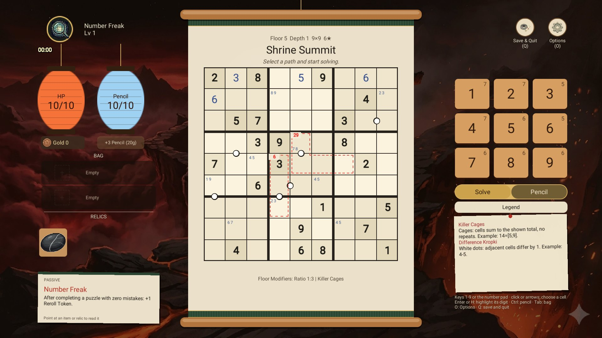
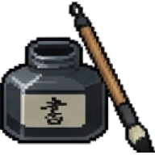
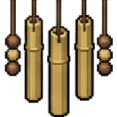

Gold 142

Ink WellRARE · 1 use

Wind ChimeNORMAL · 1 use
BAG · RAREInk Well
Restore 11 pencil marks.
Click or A to use · Tab or LB: the bag
RELICCracked Teacup
Absorb the first mistake each puzzle (no HP loss).
Always on · LT: the relics
2 · the bag shows what it holds
1 · your gold beside the Pencil you buy with it
3 · the detail slip: the passive, or the item or relic in focus
Puzzle screen · RM-208 · gold, bag rows and a detail slip in the left column (?relic: a relic in focus)